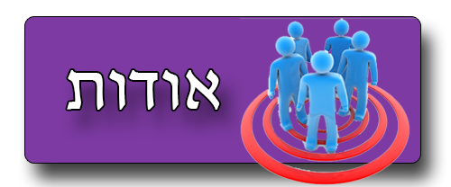
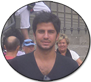

ראשי >> אודות


כמה מילים על עצמי,
שמי ראובן ז'מי, סטודנט שנה שנייה בתואר להנדסת תוכנה בבית הספר הגבוה להנדסה ועיצוב "שנקר".
אתר זה נפתח במסגרת הקורס "שיטות וכלים לפיתוח אינטרנט".
בחרתי לבנות אתר זה, עקב משיכה בלתי רגילה לתחום הסמארטפונים והאפליקציות.
עוד בילדותי, תמיד דאגתי להשאר מעודכן בתחום זה ולהתחדש בטלפונים ניידים, כאשר עם חלוף הימים וקידמת הטכנולוגיה הסקרנות והחיבה נותבו לעבר סמארטפונים ואפליקציות.
כך שלמעשה החלטתי להפיק מפרוייקט זה את המיטב והמירב ולחלוק את המידע והידע שברשותי עם כל מי שרק ירצה.
מקווה שתהנו.